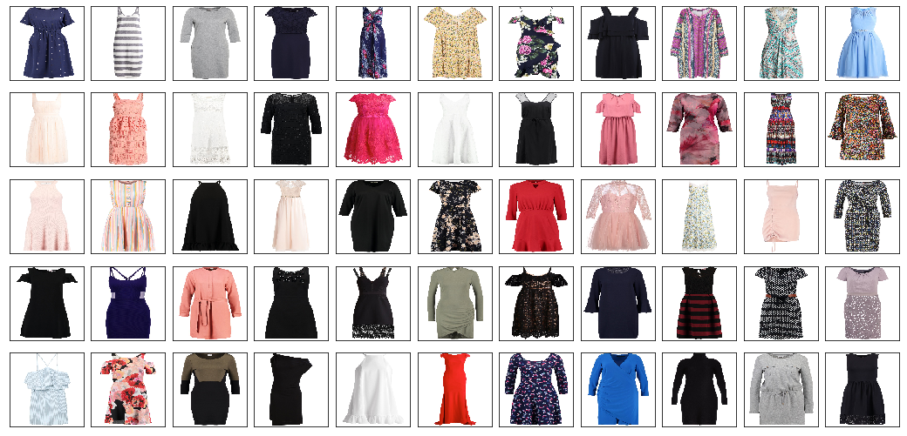
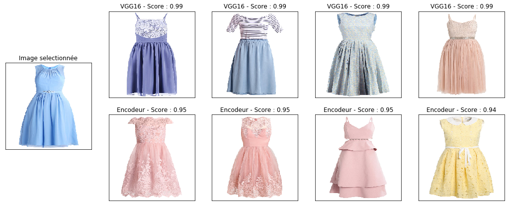
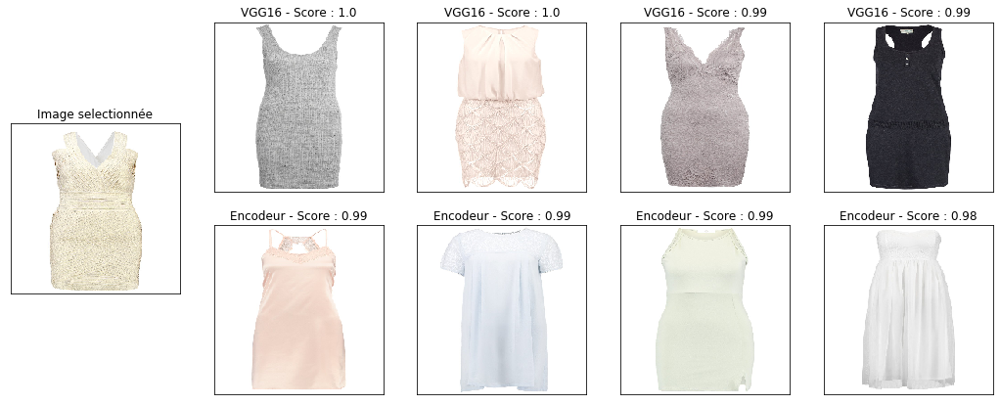

Moteur de Recommandation
Les moteurs de recommandations ont progressivement envahi les sites marchands. Avec l'augmentation de la puissance de calcul, il est possible de croiser de plus en plus de données (données de ventes, descriptions produits, commentaires clients...), ce qui à considérablement augmenté la pertinence de ces outils. Cette amélioration profite aussi bien aux clients qui obtiennent un accès plus rapide aux produits qu'ils souhaitent acheter, que pour les entreprises qui augmentent leur chiffre d'affaire ainsi que la satisfaction client.
L'objectif de ce projet est de voir s'il est possible de réaliser un moteur de recommandation basé uniquement sur des images.
Pour réaliser ce projet, nous avons utilisé un jeu de données mis à disposition par Zalando Research et disponible sur leur github (ici). Le jeu de données est composé de 8792 images de robes vendues sur le site marchant.
Le système de recommandation sera composé de 2 composants:
- Un algorithme de features extraction
- Une matrice de similarité
Nous testerons 2 algorithmes de features extraction différents. Et nous comparerons les résultats à la fin.
import pandas as pd
import numpy as np
import matplotlib.pyplot as plt
from PIL import Image
import tqdm
import requests
from io import BytesIO
Importation des données
Le jeu de données mis à disposition par Zalando Research est un fichier Json qui contient 8792 lignes. Chacune des lignes correspond à une robe.
Pour chaque robe du dataset, nous avons un lien url vers la photo du produit, et plusieurs descriptions du produit.
data = pd.read_json("data/FEIDEGGER_release_1.1.json")
data.head()
| url | descriptions | split | |
|---|---|---|---|
| 0 | https://i2.ztat.net/... | [kurze, sexy, sommer, sexy, party, gelb kleid,... | 7 |
| 1 | https://i6.ztat.net/... | [blaues knie langes damen kleid mit weissem pu... | 6 |
| 2 | https://i6.ztat.net/... | [Dieses Produkt ist ein Kleid. Es ist grau und... | 2 |
| 3 | https://i2.ztat.net/... | [Oberschenkellanges Stoffkleid in grai mit Hüf... | 7 |
| 4 | https://i6.ztat.net/... | [Es ist ein elegantes dunkelblaues mittellange... | 7 |
Téléchargement des images
Pour récupérer les images des produits, nous devons scraper chacun des liens urls et convertir les images pour les rendre exploitables.
image = []
for i in tqdm.tqdm(range(0,len(data))):
response = requests.get(data.url[i])
img = Image.open(BytesIO(response.content))
img = np.array(img.resize((224, 224)))
img = img.astype('float16')/255
image.append(img)
100%|██████████| 8792/8792 [09:10<00:00, 19.28it/s]
Voici un extrait des images de robes obtenues :
fig = plt.figure(figsize=(25,9))
plt.gcf().subplots_adjust( wspace = 0.1, hspace = 0.1)
for i in range(1,76):
plt.subplot(5, 15, i)
img = plt.imshow((image[i]*255).astype(int))
img.axes.get_xaxis().set_visible(False)
img.axes.get_yaxis().set_visible(False)
plt.show()

Feature Extraction
Dans un dataset traditionnel composé de lignes et de variables, chaque variable est un indicateur qui permet de décrire une ligne du dataset.
Dans un dataset d'images, nous ne disposons pas de variables qui permettent de dire qu'une robe est une robe a rayure ou une robe à pois. C'est une combinaison de pixels localisée à un endroit variant d'une image à une autre qui permet à l'oeil humain de faire la nuance.
C'est pour cette raison que nous utilisons un algorithme de features extraction afin de transformer une image en features. Ou chaque features contient une information différente sur l'image.
Dans cette application, nous allons comparer deux algorithmes de features extraction.
Le premier algorithme est un modèle convolutif pré-entraîné sur un jeu de données d'images variées (ImageNet).
Le deuxième est l'utilisation d'un auto-encodeur.
Transfert Learning pour l'extraction de features
Pour extraire des features d'une image, il est possible d'utiliser un modèle convolutif pré-entraîné. C'est-à-dire que l'on récupère les poids d'un modèle de classification construit sur un autre jeu de données.
Nous allons utiliser le modèle VGG16. Ce modèle relativement simple est un réseau convolutif de classification construit sur le dataset de ImageNet. Il prend en entrée des images de taille 224 224 3 et retourne un vecteur de taille 1000 qui correspond à la probabilité que l'image en entrée appartiennent a chacune des 1000 classes de ImageNet

Pour utiliser ce modèle en tant qu'extracteur de features, il suffit de supprimer la dernière couche composée de 1000 neurones. Notre couche de neurones de sortie devient alors l'avant dernière chouche du VGG16 qui correspond à une couche de 4096 neurones.
from keras.applications.vgg16 import VGG16
from keras.models import Model
model = VGG16(include_top=True, weights='imagenet')
model.layers.pop()
model = Model(input=model.input,output=model.layers[-1].output)
model.summary()
Model: "model_2"
_________________________________________________________________
Layer (type) Output Shape Param #
=================================================================
input_2 (InputLayer) (None, 224, 224, 3) 0
_________________________________________________________________
block1_conv1 (Conv2D) (None, 224, 224, 64) 1792
_________________________________________________________________
block1_conv2 (Conv2D) (None, 224, 224, 64) 36928
_________________________________________________________________
block1_pool (MaxPooling2D) (None, 112, 112, 64) 0
_________________________________________________________________
block2_conv1 (Conv2D) (None, 112, 112, 128) 73856
_________________________________________________________________
block2_conv2 (Conv2D) (None, 112, 112, 128) 147584
_________________________________________________________________
block2_pool (MaxPooling2D) (None, 56, 56, 128) 0
_________________________________________________________________
block3_conv1 (Conv2D) (None, 56, 56, 256) 295168
_________________________________________________________________
block3_conv2 (Conv2D) (None, 56, 56, 256) 590080
_________________________________________________________________
block3_conv3 (Conv2D) (None, 56, 56, 256) 590080
_________________________________________________________________
block3_pool (MaxPooling2D) (None, 28, 28, 256) 0
_________________________________________________________________
block4_conv1 (Conv2D) (None, 28, 28, 512) 1180160
_________________________________________________________________
block4_conv2 (Conv2D) (None, 28, 28, 512) 2359808
_________________________________________________________________
block4_conv3 (Conv2D) (None, 28, 28, 512) 2359808
_________________________________________________________________
block4_pool (MaxPooling2D) (None, 14, 14, 512) 0
_________________________________________________________________
block5_conv1 (Conv2D) (None, 14, 14, 512) 2359808
_________________________________________________________________
block5_conv2 (Conv2D) (None, 14, 14, 512) 2359808
_________________________________________________________________
block5_conv3 (Conv2D) (None, 14, 14, 512) 2359808
_________________________________________________________________
block5_pool (MaxPooling2D) (None, 7, 7, 512) 0
_________________________________________________________________
flatten (Flatten) (None, 25088) 0
_________________________________________________________________
fc1 (Dense) (None, 4096) 102764544
_________________________________________________________________
fc2 (Dense) (None, 4096) 16781312
=================================================================
Total params: 134,260,544
Trainable params: 134,260,544
Non-trainable params: 0
_________________________________________________________________
Pour obtenir les features de chaque image, nous pouvons réaliser un model.predict()
vgg16_features_image = model.predict(image)
print("Taile de vgg16_features_image : {}".format(vgg16_features_image.shape))
Taile de vgg16_features_image : (8792, 4096)
Autoencodeur
La deuxième méthode que nous allons tester pour extraire des informations d'une image est la création d'un auto-encodeur.
Un auto-encodeur est un réseau de neurones utilisé pour réduire les dimensions d'un dataset. Il est composé d'une couche d'entrée et d'une couche de sortie de même taille ainsi que de couches de neurones intermédaires. L'auto-encodeur apprend à reproduire ce qu'on lui donne en entrée. Mais à cause des layers intermédiaires qui ont un nombre de paramètres restreint, l'auto-encodeur est obligé de résumer l'information présente dans le dataset d'image.

Pour créer notre auto-encodeur, nous allons utiliser tensorflow.
Nous créons un encodeur composé d'une succession de convolutions et de poolings. Puis nous utilisons un flatten et un layer dense de 4096 neurones afin que l'output de l'encodeur soit de même taille que la sortie du VGG16. Puis nous le connectons à un décodeur composé de convolutions et de upsamplings qui permet de ré-obtenir un vecteur de même taille que nos images.
import tensorflow as tf
# Encodeur
input_img = tf.keras.Input(shape=(224,224,3))
Encod = tf.keras.layers.Conv2D(16, (3, 3), padding='same', activation='relu')(input_img)
Encod = tf.keras.layers.MaxPooling2D((2, 2))(Encod)
Encod = tf.keras.layers.Conv2D(5, (3, 3), padding='same', activation='relu')(Encod)
Encod = tf.keras.layers.MaxPooling2D((2, 2))(Encod)
Encod = tf.keras.layers.Conv2D(2, (3, 3), padding='same', activation='relu')(Encod)
Encod = tf.keras.layers.Flatten()(Encod)
Encod = tf.keras.layers.Dense(4096)(Encod)
# Decodeur
Decod = tf.keras.layers.Dense(6272)(Encod)
Decod = tf.keras.layers.Reshape((56, 56, 2))(Decod)
Decod = tf.keras.layers.Conv2D(2, (3, 3), padding='same', activation='relu')(Decod)
Decod = tf.keras.layers.UpSampling2D((2, 2))(Decod)
Decod = tf.keras.layers.Conv2D(5, (3, 3), padding='same', activation='relu')(Decod)
Decod = tf.keras.layers.UpSampling2D((2, 2))(Decod)
Decod = tf.keras.layers.Conv2D(16, (3, 3), padding='same', activation='relu')(Decod)
Decod = tf.keras.layers.Conv2D(3, (3, 3), padding='same', activation='relu')(Decod)
model = tf.keras.Model(input_img, Decod)
model.summary()
Model: "model_22"
_________________________________________________________________
Layer (type) Output Shape Param #
=================================================================
input_10 (InputLayer) [(None, 224, 224, 3)] 0
_________________________________________________________________
conv2d_63 (Conv2D) (None, 224, 224, 16) 448
_________________________________________________________________
max_pooling2d_18 (MaxPooling (None, 112, 112, 16) 0
_________________________________________________________________
conv2d_64 (Conv2D) (None, 112, 112, 5) 725
_________________________________________________________________
max_pooling2d_19 (MaxPooling (None, 56, 56, 5) 0
_________________________________________________________________
conv2d_65 (Conv2D) (None, 56, 56, 2) 92
_________________________________________________________________
flatten_9 (Flatten) (None, 6272) 0
_________________________________________________________________
dense_18 (Dense) (None, 4096) 25694208
_________________________________________________________________
dense_19 (Dense) (None, 6272) 25696384
_________________________________________________________________
reshape_9 (Reshape) (None, 56, 56, 2) 0
_________________________________________________________________
conv2d_66 (Conv2D) (None, 56, 56, 2) 38
_________________________________________________________________
up_sampling2d_18 (UpSampling (None, 112, 112, 2) 0
_________________________________________________________________
conv2d_67 (Conv2D) (None, 112, 112, 5) 95
_________________________________________________________________
up_sampling2d_19 (UpSampling (None, 224, 224, 5) 0
_________________________________________________________________
conv2d_68 (Conv2D) (None, 224, 224, 16) 736
_________________________________________________________________
conv2d_69 (Conv2D) (None, 224, 224, 3) 435
=================================================================
Total params: 51,393,161
Trainable params: 51,393,161
Non-trainable params: 0
_________________________________________________________________
Nous entrainons notre ento-encodeur sur les images :
model.compile(optimizer="adam", loss="mse")
model.fit([image],image, batch_size = 100, epochs = 15, shuffle=True)
Train on 8792 samples
Epoch 1/15
8792/8792 [==============================] - 23s 3ms/sample - loss: 0.1471
Epoch 2/15
8792/8792 [==============================] - 21s 2ms/sample - loss: 0.0376
Epoch 3/15
8792/8792 [==============================] - 21s 2ms/sample - loss: 0.0301
Epoch 4/15
8792/8792 [==============================] - 21s 2ms/sample - loss: 0.0270
Epoch 5/15
8792/8792 [==============================] - 21s 2ms/sample - loss: 0.0247
Epoch 6/15
8792/8792 [==============================] - 21s 2ms/sample - loss: 0.0234
Epoch 7/15
8792/8792 [==============================] - 21s 2ms/sample - loss: 0.0224
Epoch 8/15
8792/8792 [==============================] - 21s 2ms/sample - loss: 0.0217
Epoch 9/15
8792/8792 [==============================] - 21s 2ms/sample - loss: 0.0209
Epoch 10/15
8792/8792 [==============================] - 21s 2ms/sample - loss: 0.0198
Epoch 11/15
8792/8792 [==============================] - 21s 2ms/sample - loss: 0.0192
Epoch 12/15
8792/8792 [==============================] - 21s 2ms/sample - loss: 0.0186
Epoch 13/15
8792/8792 [==============================] - 21s 2ms/sample - loss: 0.0183
Epoch 14/15
8792/8792 [==============================] - 21s 2ms/sample - loss: 0.0178
Epoch 15/15
8792/8792 [==============================] - 21s 2ms/sample - loss: 0.0176
Les features des images correspondent à la sortie de l'encodeur. Pour récupérer la sortie de l'encodeur, nous créons un modèle composé des layers de l'encodeur et de la même manière que pour VGG16, nous appliquons la fonction predict pour extraire les features.
Encodeur = tf.keras.Model(input_img, Encod)
encod_features_image = Encodeur.predict(image)
Calcul de similarité
Afin de pouvoir proposer des vêtements similaires à partir d'un vêtement sélectionné par un client, il est nécessaire de sélectionner une métrique permettant de mesurer la similarité de deux images. Pour ce faire, nous avons utilisé la cos similarité, car cette métrique est bien adaptée à ce type de problème. Elle mesure l'angle qui sépare deux vecteurs.
On peut réaliser une matrice de similarité grâce à la fonction cosine_similarity de sklearn
from sklearn.metrics.pairwise import cosine_similarity
vgg16_matrice_cos = cosine_similarity(vgg16_features_image)
encod_matrice_cos = cosine_similarity(encod_features_image)
print("taille vgg16_matrice_cos : {}".format(vgg16_matrice_cos.shape))
print("taille encod_matrice_cos : {}".format(encod_matrice_cos.shape))
taille vgg16_matrice_cos : (8792, 8792) taille encod_matrice_cos : (8792, 8792)
Pour extraire à partir d'une image, d'autres images qui lui sont le plus similaire, nous avons créé une fonction qui prend en entrée l'identifiant d'une image et qui retourne l'identifiant et le score de similarité des N images qui lui ressemblent le plus.
def extract_cos_vgg16(image_id, nb_simil = 5):
score_vgg16 = pd.DataFrame({
'score' : vgg16_matrice_cos[image_id],
'index' : np.arange(0,len(vgg16_matrice_cos))
})
score_vgg16 = score_vgg16.sort_values('score',ascending = False)
return((score_vgg16.index[1:nb_simil+1],score_vgg16.score[1:nb_simil+1]))
def extract_cos_encod(image_id, nb_simil = 5):
score_encod = pd.DataFrame({
'score' : encod_matrice_cos[image_id],
'index' : np.arange(0,len(encod_matrice_cos))
})
score_encod = score_encod.sort_values('score',ascending = False)
return((score_encod.index[1:nb_simil+1],score_encod.score[1:nb_simil+1]))
Nous créons aussi une fonction qui permet d'afficher l'image sélectionnée et les N images ayant le score de similarité le plus élevé.
def plot_similarite(image_id, nb_simil = 5):
fig = plt.figure(figsize=(18,7))
plt.gcf().subplots_adjust( wspace = 0.2, hspace = 0.2)
# Image selectionnée
plt.subplot(1, nb_simil +1, 1)
plt.title('Image selectionnée')
img = plt.imshow((image[image_id] * 255).astype(int))
img.axes.get_xaxis().set_visible(False)
img.axes.get_yaxis().set_visible(False)
##### VGG16 #####
# Image similaire (cos metric)
index_simi_img,score = extract_cos_vgg16(image_id = image_id, nb_simil = nb_simil)
for i in range(len(index_simi_img)):
plt.subplot(2, nb_simil +1, i+2)
plt.title('VGG16 - Score : ' + str(round(score[index_simi_img[i]],2)))
img = plt.imshow((image[index_simi_img[i]]*255).astype(int))
img.axes.get_xaxis().set_visible(False)
img.axes.get_yaxis().set_visible(False)
##### autoencod #####
# Image similaire (cos metric)
index_simi_img,score = extract_cos_encod(image_id = image_id, nb_simil = nb_simil)
for i in range(len(index_simi_img)):
plt.subplot(2, nb_simil +1, nb_simil +3 +i)
plt.title('Encodeur - Score : ' + str(round(score[index_simi_img[i]],2)))
img = plt.imshow((image[index_simi_img[i]]*255).astype(int))
img.axes.get_xaxis().set_visible(False)
img.axes.get_yaxis().set_visible(False)
plt.show()
On peut maintenant vérifier que notre score de similarité fonctionne correctement.
On applique nos fonctions sur les 20 premières images.
for x in range(0,20):
print("______________________________________ Image numéro : {} ______________________________________".format(x))
plot_similarite(image_id = x, nb_simil = 4)
__________________________________________ Image numéro : 0 __________________________________________
__________________________________________ Image numéro : 1 __________________________________________
__________________________________________ Image numéro : 2 __________________________________________
__________________________________________ Image numéro : 3 __________________________________________
__________________________________________ Image numéro : 4 __________________________________________
__________________________________________ Image numéro : 5 __________________________________________
__________________________________________ Image numéro : 6 __________________________________________
__________________________________________ Image numéro : 7 __________________________________________
__________________________________________ Image numéro : 8 __________________________________________
__________________________________________ Image numéro : 9 __________________________________________
__________________________________________ Image numéro : 10 __________________________________________
__________________________________________ Image numéro : 11 __________________________________________

__________________________________________ Image numéro : 12 __________________________________________
__________________________________________ Image numéro : 13 __________________________________________
__________________________________________ Image numéro : 14 __________________________________________
__________________________________________ Image numéro : 15 __________________________________________

__________________________________________ Image numéro : 16 __________________________________________
__________________________________________ Image numéro : 17 __________________________________________
__________________________________________ Image numéro : 18 __________________________________________
__________________________________________ Image numéro : 19 __________________________________________
Conclusion
Pour la mise en place du modèle, le VGG16 dispose d'un avantage, puisqu'il ne nécessite aucun entraînement et nécessite donc très peu de ressource de calcul.
Pour les résultats, le modèle avec le VGG16 semble être meilleur, surtout pour la détection de motif sur les vêtements comme les rayures, pois ou encore les motifs florales. Le modèle avec l'auto-encodeur arrive à repérer les formes et les couleurs des vêtements, mais à beaucoup plus de mal à donner de l'importance aux motifs.
Le VGG16 étant programmé pour classifier des images varié comme par exemple des fleurs, des objet avec des pois ou rayures... De ce fait, il est plus sensible aux motifs des vêtements. Alors que pour l'auto-encodeur, le principe est de résumer l'information présente dans une image, de ce fait le modèle doit sûrement privilégier les formes et les couleurs qui ont un plus fort impact sur le calcul de l'erreur lors de la construction du réseau de neurones.
Cependant, dans certains cas ou les images sont vraiment spécifiques à un problème, peut être que l'auto-encodeur fournirait de meilleur résultats
La difficulté d'une telle approche réside dans le fait qu'il est difficile d'évaluer le moteur de recommandation en terme de performance. En effet, à ma connaissance, nous n'avons pas comme pour un problème supervisé une métrique permettant de quantifier la qualité du modèle.
Une Solution pourrait consister à mettre en production le moteur de recommandation sur un échantillon de client afin de réaliser un A/B testing.